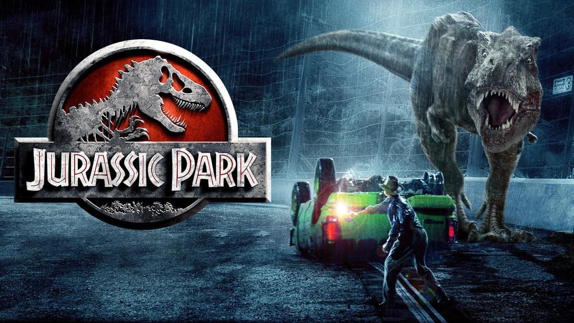

So since you are here reading my about page, might as well tell you a bit about myself. I am 21 years old and I
was born in a small town in India called Ranny, Kerela. I came to America in 2005 and I first lived in New Jersey.
Shortly after I moved to Staten Island. Below is a picture of Kerela.

I studied at P.S. 54 then I.S. 72. During these years I developed an interest toward computers.
For high school I attended Susan E. Wagner high school. There I joined my school's coding club. During my final year of high school I
decided to attend Hunter College. After a year and a half of traveling and stressing I transferred over to the College of Staten Island.
I am currently in my senior year of college and I am a computer science major. I am interested in web development, cybersecurity, and machine learning.
When I am not studying or doing anything productive I love to chill out. I love watching movies, tv shows, and anime. My
personal favorite movies are Jurrasic Park, Catch Me If You Can, and The Dark Knight. My favorite tv shows are Breaking Bad, Lost, and
Friends. Game Of Thrones would be included with my favorite TV shows but season 8 happened. Out of the three, I love watching anime the most.
My favorite animes are Naruto, Attack on Titan, and Hunter X Hunter. I also love reading manga and playing video games. My video games include
Pokémon, Call of Duty, Among Us, and Dragon Ball FighterZ. In other words, I am a huge nerd.

